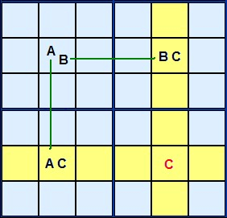
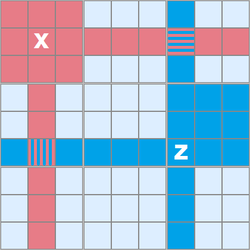
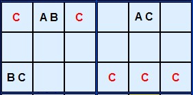
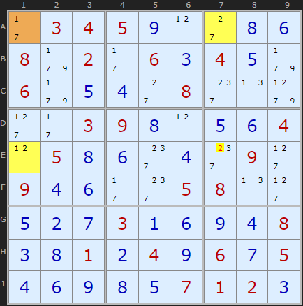
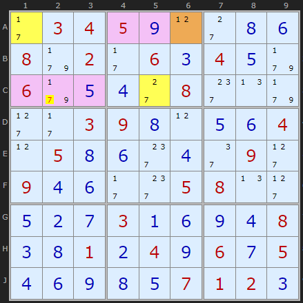
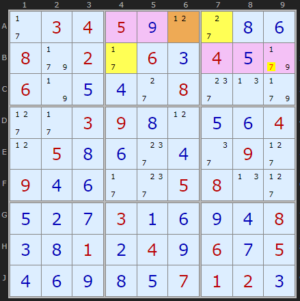
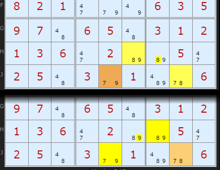

SudokuWiki.org
Strategies for Popular Number Puzzles
Y-Wing Strategy

Lets look at Figure 1 for the theory.
A, B and C are three different candidate numbers in a rectangular formation. Three of the corners have two candidates AC, AB and BC. The cell marked AB is the key. If the solution to that cell turns out to be A then C will definitely occur in the lower left corner.If AB turns out to be B then C is certain to occur in the top right corner. C is a complementary pair.

It's impossible for a C to live there and it can be removed.
In Figure 2 I'm demonstrating the sphere of influence two example cells have, marked red and blue. X can 'see' all the red cells, Z can 'see' all the blue ones. In this case there are two cells which overlap and these are 'seen' by both.


I have found (June 2025) a new 'tough' Sudoku puzzle with a sequence of five Y-Wings to illustrate the full range of this strategy. The first three are pictured here but you can load the puzzle into the solver to see the remaining examples.
The first Y-Wing is a rectangular alignment which is close to the theory diagram. The AB cell in A1 links 7 with the pair on A7 and the 1 in E1. The number common to both the pincer cells is 2 which must go in either A7 or E1 so 2 in E7 can be removed.

The second Y-Wing has four target cells show in pink but three of them are solved cells so of no use. But there is a 7 in C2 that can be eliminated. The 7s in A1 and C5 are linked to A6 by 1 and 2 respectively. One end of the pincer or the other must be 7.

The third step is a similar pincer movement. A6 is connected to A7 by 2 and to B4 by 1. Looking along row B we can remove 7 from B9

So here is a tricky situation. Doesn't seem obvious at first sight which 89 in H6 or H7 could make the Y-WIng. Why did the solver pick H6? Well there is a double and mirrored Y-Wing here. The solver just returned the first. Equally valid is a hinge on J8 and a common candidate 9 allowing 9 to be removed from H6. The result is the same - fixing 8 and 9 on those cells.
Y-Wing Exemplars
These puzzles require the Y-Wing strategy at some point but are otherwise trivial.All replaced June 2025 except for number 10.
They make good practice puzzles.
Comments
Email addresses are never displayed, but they are required to confirm your comments. When you enter your name and email address, you'll be sent a link to confirm your comment. Line breaks and paragraphs are automatically converted - no need to use <p> or <br> tags.
... by: blortch1
... by: Benny
A Y-Wing is comprised of 3 bi-value candidate cells found in more than 1 block that make up a 2,2,2 Triple. The Y-Wing Triple will consist of a Pivot cell and 2 Pincer cells that see each other via the same block, row, or column. The 2 Pincer cells will have 1 common candidate - if both Pincer cells see a 4th cell that has that common candidate, that candidate can be eliminated.
BTW, I've seen hundreds of Sudoku puzzles and there are several ways of labelling rows and columns - I like your way!
... by: Tom
... by: Robert
Take for example the Y-wing Figure 3. Suppose the "BC" were instead on the top row, either just to the right or just to the left of the cell with "AC". All of the eliminations would still work. Those on the top row would now be possible by a "locked set" strategy, since the three cells with "AB", "BC", and "AC" only have three values between them. But the three eliminations along the bottom row do not follow so easily.
In all cases, though, either "bent" or a "straight" extended version, it seems the Y-wing is a special case of an AIC.
... by: Bonnie
... by: Bam
It is customary to label columns with letters, and rows with numbers — Your Otherwise excellent article incorrectly reverses this industry standard practice (And also contains a few minor typographical errors, as well).
I hope you’ll find a competent proofreader and/or reviewer, next time.
Regards the coordinate system you're the first to ever suggest they are the wrong way round. I was building the solver five months after the first ever Sudoku was published, which was 2005. Even then there was a large active forum community and I followed their conventions. Of course it was all new ground, so names and things were constantly being invented and then adopted more widely. A big minority wrote/preferred the rXcY system but most people, including me, preferred the shorter letter+number. At no point did I see a board with letters for columns. Which industry is it standard? Chess?
But I will not fault the man who invented this marvelous site. If he wishes to call the columns red, green, blue and magenta!?
... by: Bentimus
Now that I get it, I have a question: Can a single Y-Wing be exploited three ways, every time?
In example 1, your illustration uses A2 as the AB Cell to remove 4 from H3. Can you also use I2 as the AB Cell and remove 8 from B1,C1,A3,C3? And then again with B3 to remove 3 from row 2? (Row 2 doesn't actually give us new information, but I hope you know what I mean)
If that is the case, example 3 would remove these:
4 from D1
8 from A5,C5
7 from row B, but there aren't any left
... by: Beginner
Step by step, it works thru the puzzle and helps me learn.
I appreciate the learning.
BUT, the hard puzzles -
I do NOT understand the logic - I see the results
I just don't see the logic to get there
Thanks for the program - It really helps.
... by: dan
... by: Cotswold Mike
... by: David Raymond
The great feature of Y-Wings is that they can be seen quickly in puzzles worked by hand with pencil marks as opposed to chain solutions.
... by: David Spector
There could also be ways (lines and arrows or just checkboxes) to indicate how groups of techniques are to be repeated (interatively or nested).
Just for completeness...
... by: Yoshihiro Sato
I am learning Y-Wing strategy from this page.
In Y-Wing Example 3, I find two Y-Wing candidates.
In address of { {B, 6}, {B, 1},{D, 6} }, Y-Wing is { {3, 4}, {3, 8}, {4, 8} }, then 4 in {D, 1} shoud be removed. This is shown in your figure.
In address of { {H, 4}, {H, 3}, {F, 4} }, Y-Wing is { {3, 4}, {3, 8}, {4, 8} }, then 8 in {F,3} shoud be removed. Is this correct or wrong ?
Best regards, Y.Sato
... by: Jakesprake
... by: zoph
I presume Exemplar 4 is the hardest of the four exemplars, owing to it highest score of 179.
... by: Cotswold Mike
... by: georgemiller
except of course the eights in cell A2 and A3.
... by: Jon
And there are many minor variations on the solving path you can take, so yes, your solution might only get the one, depending on what you did and how much intuition you used.
... by: dano
68 - 89 aligned in a row (h1 - h7)
89 - 69 aligned in the same box (h7 - I8)
If this is a y-wing then the complementary pair are the 9's.
Is this a valid y wing and if so can you eliminate all the other 9's from the box that contains the 89-69 complementary pair?
As for your ex if you think in terms ABC it is obvious that the 6 will be the C cell not 9 so you can eliminate the 6S that see the 2 cells containing the 6s
... by: S. Lee
Step #23 : Y-Wing (<--- This coincides with your first Y-wing step)
{3,8}[A2] hinges {4,8}[B3] and {3,4}[J2]
-> 4 taken from H3
Step #24 : Y-Wing
{3,8}[H3] hinges {4,8}[H7] and {3,4}[J2]
-> 4 taken from J7
-> 4 taken from J8
This is the only step that the puzzle required except for Naked Single, Hidden Single and Intersection Lock (=Pointing Pair + Box/Line Reduction).
It is an interesting phenomenon for me that the total number of advanced strategies is largely affected by the way how we realize the strategy into algorithm.
... by: Mike Kerstetter
... by: SpearheadJams
... by: Dino Hsu
There's a small mistake about Y-wing in the logic of proof:
I'd like to use the Y-Wing Fig. 1 to explain this.
I will use coordinates for the cells:
Cell B2 with AB (bi-value), the pivot, which connects (sees) B5 and E2
Cell B5 with BC (bi-value)
Cell E2 with AC (bi-value)
Cell E5, the target cell to eliminate C, if any, which "sees" both B5 and E2
The definition of "see" is "two cells within the same element (row, column, box)" (the two cells see each other)
The statement "So whatever happens, C is certain in one of those two cells marked C.", which implies C in one of the two cells, actually C can also be in both cells.
Note that: the two B's in cells B2 & B5 are not a "locked pair", in other words, there could be other B's in row B. Similarly, the two A's in cells B2 & E2 are not a "locked pair" either, there could be other A's in column 2. As a result, (B5, E2) could be (C, non-C), (non-C), or (C, C), and in all scenarios, C should be eliminated from cell E5.
I find this mistake (saying the above A, B should be "locked pairs") in the book "Extreme Sudoku for Dummies" by Andrew Heron & Andrew Stuart, so I check here, I hope this helps the discussion to go clear.
Thanks for your attention.
If B2 contains A then E2 does not contain A - and being a bi-value cell, it will be C
If B2 contains B then B5 does not contain B - and being a bi-value cell, it will be C
The Y-Wing strategy tells us nothing about the ultimate solution of B2, B5 or E2 (it is not designed to) - and yes it is possible for C to be in both B5 and E2 - which just goes to reinforce the idea that E5 can't be C!
... by: Hans
Thanks for excellent explaining - although I got an other question.
y-wing explanations, figure 5, left side:
between green marked cells 18 and 15 there is the cell 12578 which contains also an 8. Why is this 8 not deleted?
... by: senselocke
Doing the step-by-step solving, with explicit reasons and links to the techniques, is exactly what I needed to be a better puzzler. Thank you so much!
... by: zoph
I fail to understand the logic underlying one cell seeing another. Is it possible to easily explain the eliminations shown for Figure 5 without using the "seeing" concept.
Regarding Figure 5, and the "seeing" concept, could you explain exactly which cells see which other cells, why they do; and why some cells do not see other cells and why.
Thank you for your great site and your kind and patient instruction.
... by: nihal
... by: Helen
... by: Reggie
Do you have another more advanced book? Where in the world can I learn strategies that will let me crack those Arto Inkala puzzles?
... by: Vidyasagar
thanks
... by: Ed Wieder
... by: Jody
... by: William Balzar
Bill (NOT over the hill and just 5 months from 65)
THANKS
... by: John
... by: John Myfrianthousis
... by: ChandaMija
... by: Malikov